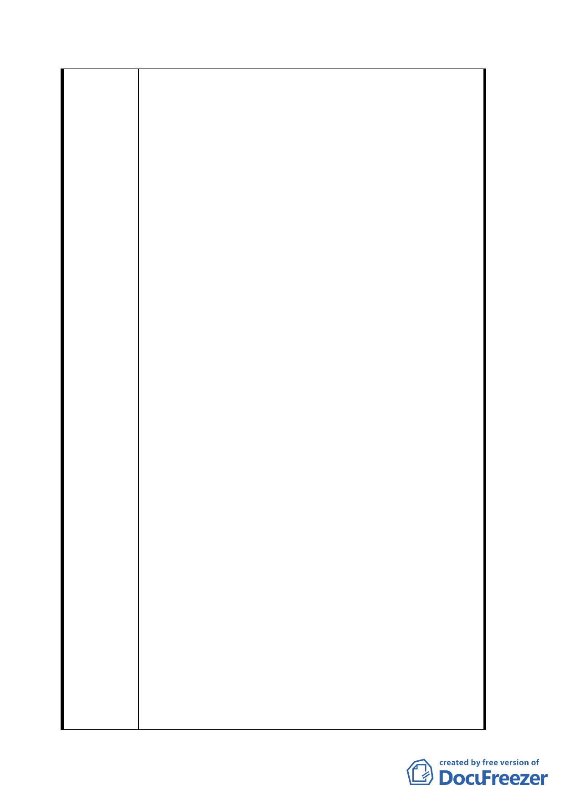

端。又：71.9.29 之前的 北醫校園相關細部計畫案，
若有類此「廢止北醫校園內計畫道路」未規劃補償方
案之舉：亦應查明後予以檢討。
二、首揭雙和里東、南、西三面倚山，北面與北醫界線相
連，居住人口擁擠：數條計畫道路應貫穿北醫校園卻
未貫穿，橫遭北醫圍牆阻斷。
三、都發局迄今，無端延宕「88.7.28 台北醫學院校園整體
規劃都市設計審議報告書」之核備，牽連相關建管弊
端：再度重創雙和里地區居民之權益。
四、本細部計畫案，劃定三興段二小段 521 之 1 地號（僅
6M 寬，屬台北醫學大學所有）畸零地為「住三特」使
用分區：已將台北醫學大學併吞相鄰國有地（即三興
段二小段 507、507 之 1、507 之 2、507 之 6、507 之 7、
507 之 8、507 之 10…等地號）之企圖心，展露無遺。
然：瓜田李下，戒之慎之：吳興街 220 巷東端係 15M
寬計畫道路，西端唐突驟減成 8M 寬：即此三興段二小
段 521 之 2 地號畸零地（僅 6M 寬）倍受非議之處。
五、北市府縱容旨揭弊端、及左列惡狀：
(一) 坐視雙和里路網淪為迷宮、居住品質惡劣：顯然理
虧。
(二) 北醫現址，設校已歷４４年：至今仍屬第三種住宅
區。北醫近年擴充規模（陸續增加師生、病患及病
患家屬之人數及交通量），到處佔用雙和里地區路
邊、角落停車：但本身卻騰出校地，經營收費停車
場，對外營利。
(三) 民國九十年底，都發局委託謝國正建築師事務所規
劃之「北醫大學地區發展計畫」總結報告書所載「北
醫大學地區發展計畫第二次公聽會會議記錄、暨第
三次公聽會會議記錄」涉及偽造文書：
1. 上列第二次公聽會並無陳民雄出席卻有陳民雄
發言記錄；第三次公聽會並無陳敏雄出席卻有
陳敏雄發言記錄。
2. 本人（即陳明雄建築師）係該兩次公聽會之出
席者，並曾正式發言指出「北醫綜合大樓門診
中心暨校園整體規劃新建工程」涉及妨礙都市
計畫、規避環境影響評估等瑕疵」之意見。…
但陳明雄參加兩次公聽會之發言記錄，全遭謝
國正建築師故意漏登。
三